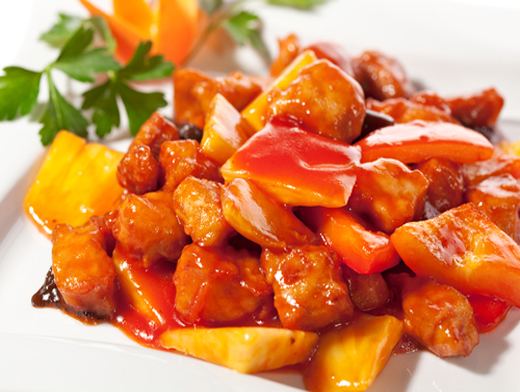
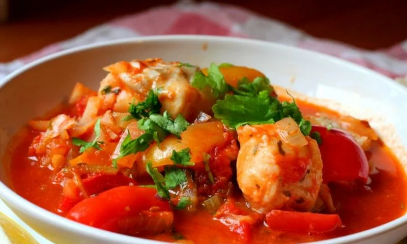
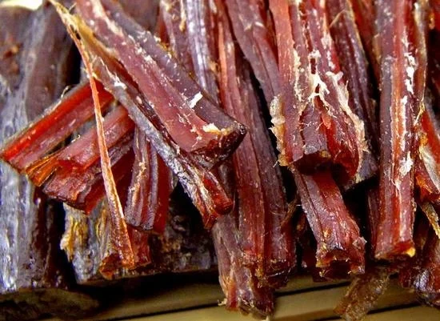
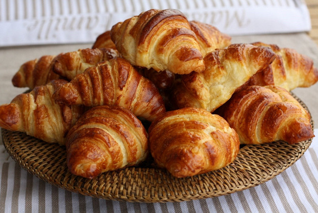

×

Madagascar
____
Традиционная еда
Филе зебу — не удивляйтесь, когда узнаете, что эта антилопа тут практически заменяет привычных нам коров. Так что мясо зебу, поджаренное на углях с травами и чесноком, даже не считается деликатесом. Хотя вкусное.

Румазава — еще одно мясное блюдо, обычное рагу из зебу или свинины, приготовленное с помидорами, другими овощами и вездесущими пряностями, придающими блюду необычный вкус.

Китоза — длинные полоски мяса, оно может быть копченым, вяленым или жареным.

Круассан — не удивляйтесь, увидев знакомые рогалики с различной начинкой. Это дань французским традициям, и как неплохая сладость, круассаны тут популярны и любимы.

____